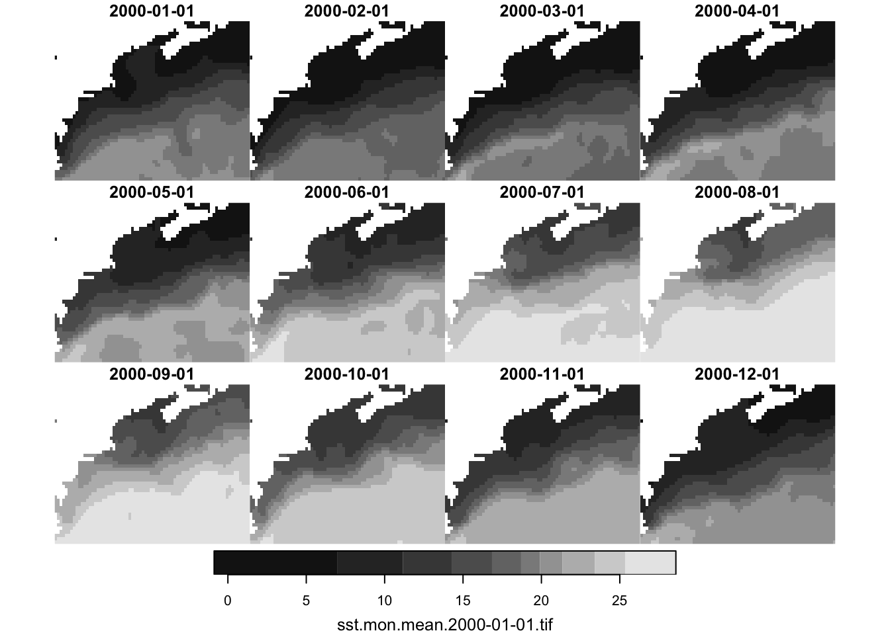
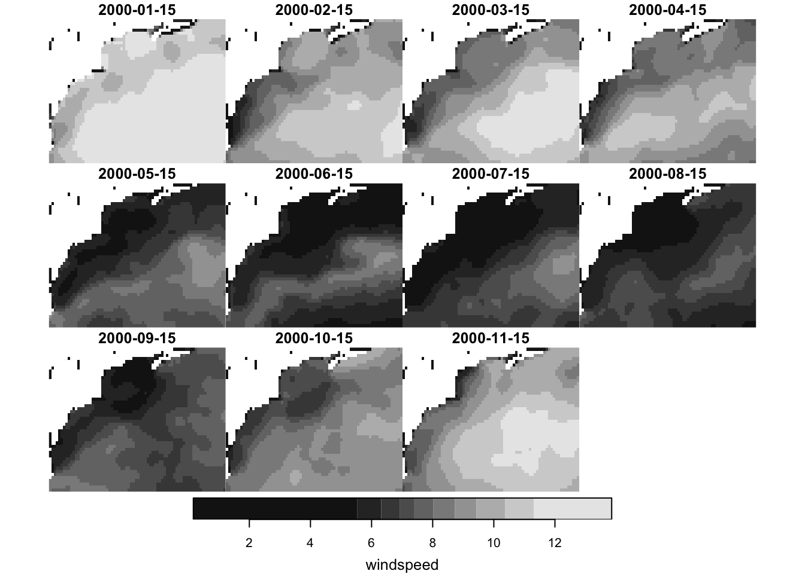

source("setup.R")
oisst_path = "data/oisst"
nbs_path = 'data/nbs'
ok = dir.create(oisst_path, recursive = TRUE, showWarnings = FALSE)
ok = dir.create(nbs_path, recursive = TRUE, showWarnings = FALSE)Predictors
1 Why predictor variables?
Predictor variables (aka “covariate variables” and “environmental variables”) are provided in the downloaded observations. We can certainly use that data, but to use MaxEnt presence only modeling, we need a way to characterize the background. For that we select random points from the same region and times that we have observations. Well, those data do not come with the OBIS download, we have to get them ourselves.
Another nice thing about using external predictor variables is that we can use them, once we have a model in hand, to make predictive maps.
2 What predictor variables?
Here we chose to use monthly means of sea surface temperature OISST and sea winds NBS v2.
Each of these are available as easily access on-line monthly datasets. Monthly means seem like a good granularity for this dataset (and a tutorial). It is appealing, but unsubstantiated, that SST and winds would have an influence on Mola mola/observer interactions.
3 Storing large data and github
Let’s make two sub-directories in our data directory; one each for OISST and NBS2.
It is not unreasonable to keep your data in your project directory, but gridded data can be quite large. Sometimes it gets so large that the size limit on github repositories can be exceeded. The simplest way to prevent that is to prevent git from tracking your large data directories by adding filters to your local .gitignore file. Here’s what we put in our project’s .gitignore file. These lines tell git to not catalog items found in those two directories.
# Biggish data directories
data/oisst/*
data/nbs/*4 Fetching data
4.1 OISST sea surface temperature data
We’ll use the oisster R package to fetch OISST monthly data. Now, OISST is mapped into the longitude range of [0,360], but our own data is mapped into the longitude range [-180,180]. So we need to request a box that fits into OISST’s range. The oisster R package) provides a function to help translate the bounding box. This can a little while.
At the end we build a small database of the files we have saved, which will be very helpful to us later when we need to find and open the files. the oisster package provides a number of organizational utilities, such as saving data into a directory hierarchy that works well when storing a mix of data (monthlies, dailies, etc). We don’t really leverage these utilities a lot, but what is provided is helpful to us.
First, let’s getthe bounding box and transfprm it to a 0-360 longitude range.
bb = get_bb(form = "numeric")
bb = oisster::to_360_bb(bb)And now get the rasters. This can take a long time, so we test for the existence of the local NBS database first. If the database doesn’t yet exist, then we download the data.
oisst_db_file = file.path(oisst_path, "database.csv.gz")
if (file.exists(oisst_db_file)){
sst_db = oisster::read_database(oisst_path)
} else {
sst = oisster::fetch_month(dates = seq(from = as.Date("2000-01-01"),
to = current_month(offset = -1),
by = "month"),
bb = bb,
path = oisst_path)
sst_db = oisster::build_database(oisst_path, save_db = TRUE)
}
sst_db# A tibble: 285 × 5
date param per trt ltm
<date> <chr> <chr> <chr> <lgl>
1 2000-01-01 sst mon mean NA
2 2000-02-01 sst mon mean NA
3 2000-03-01 sst mon mean NA
4 2000-04-01 sst mon mean NA
5 2000-05-01 sst mon mean NA
6 2000-06-01 sst mon mean NA
7 2000-07-01 sst mon mean NA
8 2000-08-01 sst mon mean NA
9 2000-09-01 sst mon mean NA
10 2000-10-01 sst mon mean NA
# ℹ 275 more rowsThe ltm is reserved for use with the long-term-mean products which we do not download. We can select from the database a small number of file to load and view.
# first we filter
sub_sst_db = sst_db |>
dplyr::filter(dplyr::between(date, as.Date("2000-01-01"), as.Date("2000-12-01")))
# then read into a multi=layer stars object
sst = stars::read_stars(oisster::compose_filename(sub_sst_db, oisst_path),
along = list(date = sub_sst_db$date))
plot(sst)
4.2 NBS wind data
Formerly known as “Blended Sea Winds”, the NBS v2 data set provides global wind estimates of wind (u and v components as well as windspeed) gong back to 1987. We shall collect monthly raster for our study area from 2000 to close to present (nbs lags by about 2 months). Like OISST, NBS is served on a longitude range of 0-360.
Note
The NBS dataset for monthly UV has some issues - certain months are not present even though the server says they are. This may generate error messages which we can ignore, but the data for that month will not be downloaded.
This can take a long time, so we test for the existence of the local NBS database first. If the database doesn’t yet exist, then we download the data.
wind_db_file = file.path(nbs_path, "database.csv.gz")
if (file.exists(wind_db_file)){
wind_db = nbs::read_database(nbs_path)
} else {
wind_db = query_nbs(period = "monthly",
dates = c(as.Date("2000-01-01"), Sys.Date()-75),
product = "uvcomp") |>
fetch_nbs(param = 'all',
bb = bb,
path = nbs_path,
verbose = FALSE) |>
write_database(nbs_path)
}Just as with sst, we can select from the database a small number of file to load and view.
# first we filter
sub_wind_db = wind_db |>
dplyr::filter(param == "windspeed",
dplyr::between(date, as.Date("2000-01-01"), as.Date("2000-12-01")))
# then read into a multi=layer stars object
wind = stars::read_stars(nbs::compose_filename(sub_wind_db, nbs_path),
along = list(date = sub_wind_db$date)) |>
rlang::set_names("windspeed")
plot(wind)